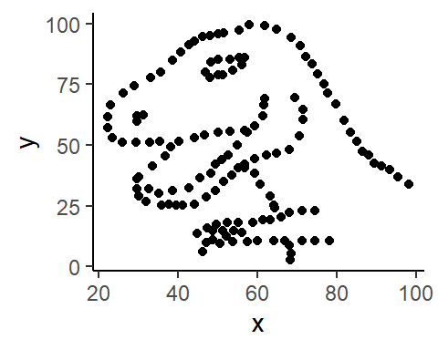
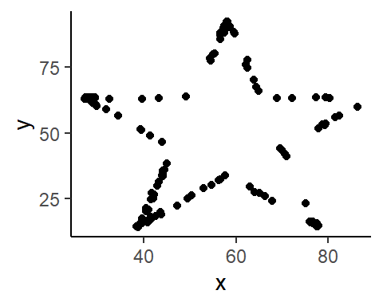
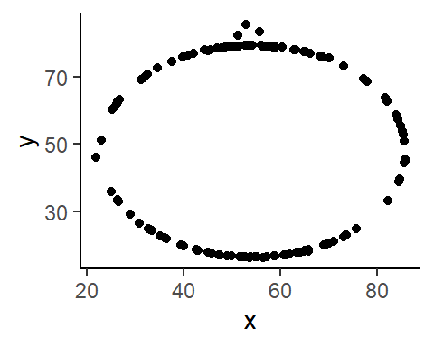
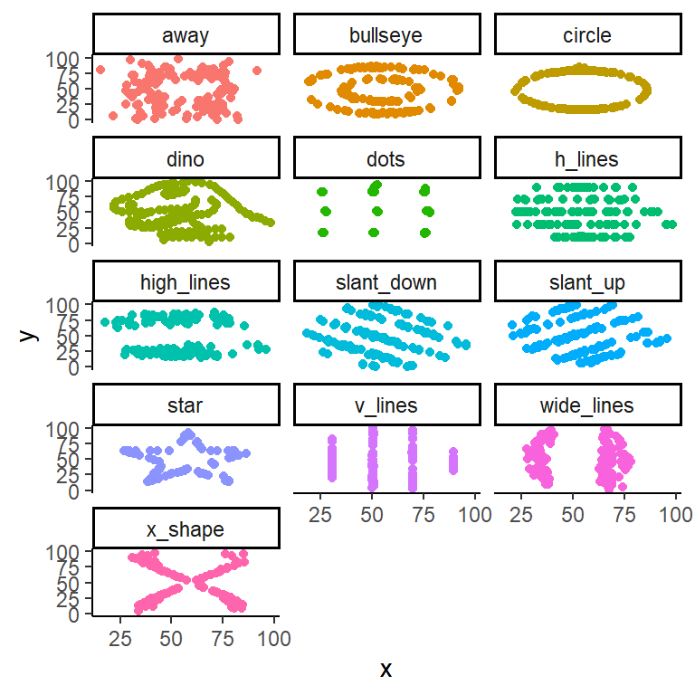

library(tidyverse)
library(kableExtra)
library(datasauRus)
# set black & white default plot theme
theme_set(theme_classic())
# improve digit and NA display
options(scipen = 1, knitr.kable.NA = '')Lab2_DatasauRus
Lab Purpose
This lab is a modified version of a lab developed by Mine Cetinkaya-Rundel. You’ll be working in random breakout groups to work through the lab.
Introduce yourselves to each other as you get started - preferred names, at least one academic interest, and at least one extracurricular activity.
The main goal of this lab is to introduce you to working with R and RStudio in conjunction with git and GitHub, all of which we will be using throughout the course. You will then submit the completed lab to Gradescope (the compiled .pdf of it) to make sure everyone is able to use Gradescope appropriately. Further directions are contained in the Practice0 assignment and you should check them out.
We will work primarily with two R packages: datasauRus which contains the datasets for the lab, and tidyverse which is a collection of packages for doing data analysis in a “tidy” way. Both packages are ready to be loaded in the setup code chunk. tidyverse loads dplyr which many of you may have seen used for data wrangling in other stats courses. It also loads ggplot2 which is the package we’ll be using to make our visualizations (more next week).
Step 0: Get the lab .Qmd file from the course git repo by pulling the repo. Copy the file over to your personal repo for class.
Assuming you have Prep0 completed (you should!), and you accepted your invite to the class GitHub organization, you should have access to the course git repo. Pulling updates your local copy of the repo, making sure you have the most recent copy of the lab that I’ve posted. Then, you can copy the file over to your repo to work on it. More detailed directions for how to do the copying are in the GitHub classroom guide. Once this is done, we are ready to get going.
Step 1: Verify you are working on the lab saved in your repo and that you are working in your project repo.
Look in the top right of RStudio to verify the project name matches your repo. (If you decided to use the GitHub Desktop app, you won’t need this part; instead check in your file explorer that you’re working in the right place.)
Knit the Qmd/Rmd file (Cmd + Shift + K on Mac or Ctrl + Shift + K on PC or hit the Knit button in the toolbar above) and verify the pdf (or other relevant files) is created in your repo and not some other location.
(From here on, if you see Rmd, it’s because it could be Qmd or Rmd - it’s whatever file you’re coding in, etc.)
Step 2: Enter your name in the YAML header where indicated.
“YAML” rhymes with “camel” and stands for “Yet Another Markup Language”. YAML headers are very sensitive - even a space or comma out of place can cause them to break. Be careful if you delete the parentheses there - they must be put back exactly.
Step 3: Knit, view diff, and commit!
Entering your name made a change to the file that we will be able to track with Git.
Knit the Rmd file, then go to your Github Desktop app (or the Git pane if you set it up in RStudio).
Click on the document in the app to see the changes you made. You can uncheck the .pdf at the same time - we only want the .Qmd/.Rmd at the moment.
If you’re happy with the changes, write “Update author name” in the Commit message box, and hit Commit. The box is in the lower left corner of the app.
This saves your changes locally including the message. The changes haven’t been sent back to GitHub yet though.
How often should you commit?? You do not have to commit after every change; this would get quite cumbersome. You should consider committing states that are meaningful to you for inspection, comparison, or restoration. For example, perhaps you commit after you’ve completed part of a problem, or after you got a graphic working, or a really complicated wrangling command down.
Step 4: Push your changes
After committing, go ahead and Push your commit(s) back onto GitHub using the buttons. In the app, after you’ve made a commit, the Fetch/Pull option turns into a Push option. Click that to push.
You can think of commits as snapshots of your work over time, and pushing will sync your work with GitHub so you (or a collaborator) can pick up where you left off but on another device. You don’t have to push after every commit, but should push before you stop working on anything. You want your changes to be available to the next person working (your future self or your collaborators).
Step 5: Edit, Commit, and Push until done!
Work through the rest of the lab. When you are done with the assignment, save the pdf as “YourFirstInitialYourLastName_thisfilename.pdf” before committing and pushing (this is generally good practice but also helps me in those times where I need to download all student homework files). For example, I would save this as AWagaman_Lab2.pdf. At times it is also useful to add the date at the end. Final pdfs should be relabeled this way to set them apart as your final submission.
You MUST push a final version of each lab .Qmd.Rmd and .pdf to your repo for our course assignments. This counts as part of your participation in class, and for this assignment, part of Practice0 is making sure I can find these in your repo. Note that you don’t have to push the .pdf until you’ve finalized it, but it doesn’t hurt to do it earlier either (assuming you keep the repo organized, anyway). Just be sure you get the rename in on the final version so that’s clear.
Gradescope Upload
Our Practice0 assignment is designed to ensure you’ve successfully submitted an assignment to Gradescope before the first real assignment is due. No feedback will be provided on this assignment. Here’s how that will work when you are finished with the lab and have your final .pdf.
For each question/part, allocate all pages associated with the specific question/part. Do your best with this. If your work for a question runs onto a page that you did not select, you may not get credit for the work. If you do n?ot allocate any pages when you upload your pdf, you may get a zero for the assignment.
You can resubmit your work as many times as you want before the deadline, so you should absolutely not wait until the last minute to submit some version of your work. You should be compiling as you go, reducing the chance of last minute compiling issues. Your git repo will show when you’ve made commits, too. For this activity, I’ve provided the commit messages so they should show. If you do run into an issue, submit whatever you have completed to receive partial credit.
Come together - Make sure everyone is ready before moving on
Working with some data and practicing workflow
The data we will be working with is called datasaurus_dozen and it’s in the datasauRus package.
When loaded, this data appears to be a single dataset. However, this single dataset contains 13 datasets, designed to show us why data visualisation is important and how summary statistics alone can be misleading. The different datasets are identified by the dataset variable.
To find out more about the dataset, type the following in your Console: ?datasaurus_dozen. A question mark before the name of an object will always bring up its help file. This command can be run in the Console or a code chunk, but remove it or comment it out from the code chunk before you compile.
1 - Understanding the data
It is tempting to jump into visualization and analysis (like we did a little on the first day), but it is critical as a statistician that we first understand the context and structure of the data.
part a - Based on the help file, how many rows and how many columns are in the data frame?
Solution: There are 1846 rows with 3 columns.
part b - Based on the help file, what variables are included in the data frame?
Solution: There are 3 variables: the dataset, x and y values.
Markdown allows you to do a lot in terms of formatting that you may not have seen before. For example, you can enter bulleted lists by using the following pattern:
- first item
- second item
- third item
For more on Markdown formatting, you can check out the RMarkdown formatting cheatsheet in our Resources folder or find out more here online. You’ll see lots of cheatsheets available for reference.
part c - Use Markdown formatting to provide a bulleted list of the variables.
Solution:
- dataset
- x
- y
part d - How many observations are in each dataset within this larger data frame? Let’s make a frequency table of the of the
datasetvariable to find out.
Note: The kable() function (from knitr package, with more functionality available from the kableExtra package) makes nicer looking tables when you knit. For quick “professional quality” pdf tables, add the argument booktabs = TRUE.
Try knitting the document without piping the frequency table to kable(), with the pipe to kable(), and finally with the pipe to kable(booktabs = TRUE) to see the differences.
datasaurus_dozen %>%
count(dataset) %>%
kable(booktabs = TRUE)| dataset | n |
|---|---|
| away | 142 |
| bullseye | 142 |
| circle | 142 |
| dino | 142 |
| dots | 142 |
| h_lines | 142 |
| high_lines | 142 |
| slant_down | 142 |
| slant_up | 142 |
| star | 142 |
| v_lines | 142 |
| wide_lines | 142 |
| x_shape | 142 |
Note: By default, the table is left-justified. You can pipe to an additional function called kable_styling() which allows further customization of pdf tables. By default, this function will center the table. It may also do a weird LaTeX thing where the table ends up somewhere else in the document other than where you want it. To prevent that from happening, we can add the argument latex_options = "hold_position" (or "HOLD_position" if you’re really serious).
LaTeX is responsible for setting up our document formatting. Kniting/compiling actually creates a .tex document first that is converted into a .pdf. Learning some LaTeX can be very useful for trying to deal with issues as well as getting equations and symbols in the document in the format you want.
Solution: (How many observations are in each data set? Write a sentence!)
There are 142 observations for each of the datasets!
2 - Data visualization and summary
part a - A correlation
Calculate the correlation coefficient, \(r\), between x and y for the dino dataset. Below is the code you will need to complete this exercise. Basically, the answer is already given, but you need to include relevant bits in your Rmd document and successfully knit it and view the results.
# Start with `datasaurus_dozen`
# Filter for observations where `dataset == "dino"`
# Store the resulting filtered data frame as a new data frame called `dino_data`
dino_data <- datasaurus_dozen %>%
filter(dataset == "dino")
# Compute correlation between `x` and `y` for `dino` dataset with label `r`
dino_data %>%
summarize(r = cor(x, y))# A tibble: 1 × 1
r
<dbl>
1 -0.0645What does this correlation coefficient tell us about the relationship between x and y in the dino dataset?
Solution: There’s a weak negative association between x and y.
part b - A plot
Oops. In intro stats, we learned correlation is an appropriate measure to use to assess linear relationships. But we didn’t plot the relationship here to check it out first. Let’s do that.
We want to plot y vs. x for the dino dataset using the ggplot() function. Its first argument is the data you’re visualizing. Next we define the aesthetic mappings. In other words, the columns of the data that get mapped to certain aesthetic features of the plot, e.g. the \(x\) axis will represent the variable called x and the \(y\) axis will represent the variable called y. Then, we add another layer to this plot where we define which geometric shapes we want to use to represent each observation in the data. In this case we want these to be points, hence geom_point.
You will learn about the philosophy of building data visualizations in detail next week. For now, follow along with the code that is provided.
ggplot(data = dino_data, mapping = aes(x = x, y = y)) +
geom_point()
What do you notice now about the relationship between x and y? Is using correlation as a summary measure appropriate?
Solution: No, correlation as a summary measure isn’t appropriate in this case. There is little correlation yet the data still reveals a pattern that is only visualised in the plot.
part c - Another correlation
Now calculate the correlation coefficient between x and y for the star dataset. You can (and should) reuse code we introduced above, after pasting it below, just replace the dataset name with the desired dataset. How does this value compare to the correlation coefficient from the dino dataset?
# Start with `datasaurus_dozen`
# Filter for observations where `dataset == "star"`
# Store the resulting filtered data frame as a new data frame called `star_data`
star_data <- datasaurus_dozen %>%
filter(dataset == "star")
# Compute correlation between `x` and `y` for `dino` dataset with label `r`
star_data %>%
summarize(r = cor(x, y))# A tibble: 1 × 1
r
<dbl>
1 -0.0630Solution: This is another weak correlation between the x and y values just like the dino dataset.
part d - Another plot
Plot y versus x for the star dataset. Does the plot look the same as the plot of the dino data? Is correlation an appropriate summary measure?
ggplot(data = star_data, mapping = aes(x = x, y = y)) +
geom_point()
Solution: Again, correlation isn’t an appropriate summary measure because there are patterns in the data that are seen on the plot.
part e - A final correlation
Now calculate the correlation coefficient between x and y for the circle dataset. You can (and should) reuse code we introduced above, after pasting it below, just replace the dataset name with the desired dataset. How does this value compare to the correlation coefficients from the other two datasets?
# Start with `datasaurus_dozen`
# Filter for observations where `dataset == "circle"`
# Store the resulting filtered data frame as a new data frame called `circle_data`
circle_data <- datasaurus_dozen %>%
filter(dataset == "circle")
# Compute correlation between `x` and `y` for `dino` dataset with label `r`
circle_data %>%
summarize(r = cor(x, y))# A tibble: 1 × 1
r
<dbl>
1 -0.0683Solution: This value is similar to the previous two datasets with a weak negative correlaton.
part f - A final plot
Plot y versus x for the circle dataset. Does the plot look the same as either plot from the other two datasets?
ggplot(data = circle_data, mapping = aes(x = x, y = y)) +
geom_point()
Solution: The plot does not look the same, it is very distinct and dissimilar from the previous two plots.
3 - Making things more efficient
The previous problem had a lot of repetition. To make things more efficient, we can plot all the datasets at once using facets, and we can compute all the correlations at once using the group_by() function. The code is provided below.
part a - Make the figure and get the values.
Solution: -0.064, -0.069, -0.068, -0.064, -0.060 and so on…
# Scatterplots by dataset
ggplot(datasaurus_dozen, aes(x = x, y = y, color = dataset))+
geom_point()+
facet_wrap(~ dataset, ncol = 3) +
theme(legend.position = "none")
# Correlations by dataset
datasaurus_dozen %>%
group_by(dataset) %>%
summarize(r = cor(x, y)) %>%
kable(booktabs = TRUE, digits = 3)| dataset | r |
|---|---|
| away | -0.064 |
| bullseye | -0.069 |
| circle | -0.068 |
| dino | -0.064 |
| dots | -0.060 |
| h_lines | -0.062 |
| high_lines | -0.069 |
| slant_down | -0.069 |
| slant_up | -0.069 |
| star | -0.063 |
| v_lines | -0.069 |
| wide_lines | -0.067 |
| x_shape | -0.066 |
part b - What do you notice? Is the correlation coefficient an appropriate summary for any of these datasets? Why or why not?
Solution: I noticed that ALL of these datasets have a very similar correlation coefficient. Yet, we can see that all of these datasets are incredibly distinct and can represent different things when plotted visually. Thus, the correlation coefficient is not an appropriate summary for any of these datasets.
part c - What do you think
ncol = 3does in the code above? What aboutdigits = 3?
Solution: ncol represents the number of columns that we’re using and the digits = 3 part represents the number of significant figures.
4 - More on R
part a - Code chunk options
.Qmds/.Rmds allow for global options to be set for how code chunks work. At times, you might change those options for a particular chunk, such as when you adjusted fig.width and fig.height above. In .Qmds, these end up inside the chunk, while in .Rmds, these are in the {r} definition of the chunk.
Let’s explore how these options work when compared to the default settings. Add the following options (one at a time!) to the code chunk below and re-knit the PDF each time. Try to identify what each option is doing to the PDF output. The QMD and RMD versions are provided for you to see (note the differences in capitalization required), but this is a .Qmd, so use those.
#| echo: falseOR Rmd versionecho = FALSE:#| eval: falseOR Rmd versioneval = FALSE:#| include: falseOR Rmd versioninclude = FALSE:#| collapse: trueOR Rmd versioncollapse = TRUE:
After trying out the options, to complete this part, use appropriate options to output the correlations but not show any of the code used to get them.
Solution:
# Correlations by dataset (plain R output)
datasaurus_dozen %>%
group_by(dataset) %>%
summarize(r = cor(x, y) %>% round(3)) # A tibble: 13 × 2
dataset r
<chr> <dbl>
1 away -0.064
2 bullseye -0.069
3 circle -0.068
4 dino -0.064
5 dots -0.06
6 h_lines -0.062
7 high_lines -0.069
8 slant_down -0.069
9 slant_up -0.069
10 star -0.063
11 v_lines -0.069
12 wide_lines -0.067
13 x_shape -0.066Note: There are a lot more R code chunk options, most of which we’ll not use in this course. But if you’re interested in the full list, check out the RMarkdown Reference Guide.
part b - Inline R code
Here’s another fun functionality of RMarkdown: You can use inline R code chunks to place R numerical output in your text. For instance:
The dino dataset contains 142 observations and has 3 variables. The mean \(x\) value is 54.2632732 units and the mean \(y\) value is 47.8322528 units.
You can use the round command to get a sensible number of digits: The mean \(x\) value is 54.3 units and the mean \(y\) value is 47.8 units.
Use inline R coding to write a sentence about the standard deviation of \(x\) in the dino dataset reported to 1 decimal place.
Solution:
part c - Text versus code formatting
Markdown will take text that is typed outside a code chunk and format it so that it doesn’t run off the page. It doesn’t do that within code chunks though. This can be problematic for both code and code comments. We’ll be learning a coding style that should help avoid issues with this, but if you have a lot of options, it can still be an issue. Let’s look at some code that needs adjusting to fix.
(If you don’t have a code margin line showing in your RStudio, look under Tools > Global Options > Code > Display for show margin and set the margin column to 80. It’s closer to 88, but if you use 80, it will match the text margin.)
We will use the iris data set built into R for this example (it has more variables to play with). Look at the help menu for details on the data set.
If you knit to pdf without doing anything in the chunk below, both the comment and code will run off the page. (Knit and check that you can see this!) We want to fix this.
For comments, you can spread them on different lines manually by making a series of shorter messages (demo-ed above in problem 2) or simply by writing a more compact comment.
For code, the idea is to only allow for one pipe (the %>% operator) or plus sign (for plots) per line, using indents to keep the overall line together (see examples above). This is the coding style we are using for class. It helps with code readability a ton! If you have a long variable list or something (not pipes or plus signs causing the issue), you’ll need to manually hit enter somewhere in the list that’s not over the line.
Fix the code chunk below so that neither the comment (which you can rewrite) nor the code goes off the edge of the page, following the coding style described and demonstrated above.
Solution:
# want to get the correlation between Sepal.Length and Sepal.Width for all three iris species in the data set
data(iris)
iris %>% select(Species, Sepal.Length, Sepal.Width) %>% group_by(Species) %>% summarize(correlation = cor(Sepal.Length, Sepal.Width)) # A tibble: 3 × 2
Species correlation
<fct> <dbl>
1 setosa 0.743
2 versicolor 0.526
3 virginica 0.457References
The original Datasaurus (dino) was created by Alberto Cairo in this great blog post. The other Dozen were generated using simulated annealing and the process is described in the paper Same Stats, Different Graphs: Generating Datasets with Varied Appearance and Identical Statistics through Simulated Annealing by Justin Matejka and George Fitzmaurice. In the paper, the authors simulate a variety of datasets that the same summary statistics to the Datasaurus but have very different distributions.